Separate the two training boundaries
The neural predictor stays frozen. A separate ridge regression uses five acoustic features to score reliability. The original Test I comparison holds out recordings, but shares seven of eight containers with score development.
7/8 development containers
Containers 1, 6, 7, 18, 25, 30 and 31 also train the reliability score. Only clip_18, container_40, is new to that score. This group is not a container-disjoint generalisation test.
Eight new containers
These containers occur in neither reliability-score development nor upstream neural-model training. The original seen_test and unseen_test file labels retain their official split meaning.
Improvement is clearest where containers recur
Keeping the highest-scored 70% of frames reduces the original Test I mean. The result on new containers remains inconclusive. The level-by-level analysis shows that this gain comes mainly from fill position.
| Group | Full MAE | MAE at 70% | Paired change · 95% interval | Exact p |
|---|---|---|---|---|
| Test I · 7/8 development containers | 1.742 cm | 1.538 cm | −0.204 [−0.274, −0.134] cm | 0.0078 |
| Test II · new containers | 2.479 cm | 2.414 cm | −0.065 [−0.158, +0.031] cm | 0.26 |
Combined score; equal-recording means. Exact two-sided tests enumerate 256 container sign assignments (p = 2/256 and 66/256) under a sign-symmetric null. Intervals use 2,000 container bootstrap resamples. The audit reports Holm adjustment and all four method/group comparisons.
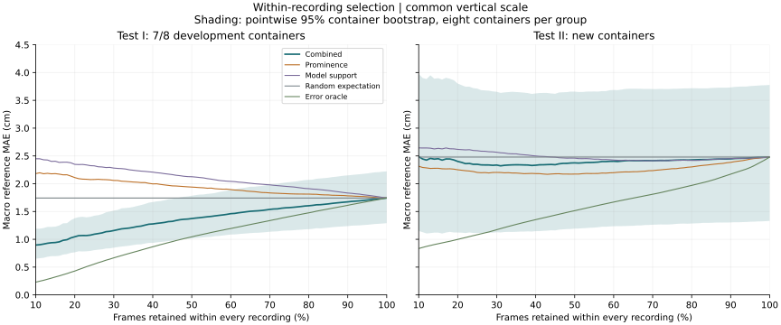
19 recordings, 11 outer folds
Every recording from one container is withheld together. Fixed ridge 0.1 changes mean MAE from 1.457 to 1.329 cm; nested training-only parameter selection gives 1.331 cm. This post-review check uses the development/Test I domain.
On new containers, global ranking is worse than no selection
Combined AURC is 1.293 cm for Test I and 2.738 cm for Test II, against constant-risk areas of 1.742 and 2.479 cm (lower is better). On Test II, a single global threshold therefore ranks recordings worse than keeping frames without any selection. The score's small within-recording benefit does not carry over to ranking across new recordings.
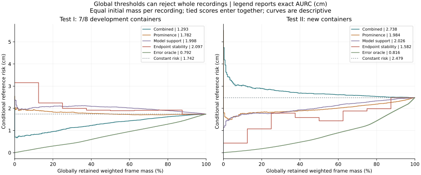
Exact tests, nested folds, penalty choices and AURC definitions ↗
What makes it work and fail, level by level
Following instructor feedback, four further experiments ask where the error comes from and which signal can see it. They use the same 33 recordings and 46 confirmed video labels. Definitions and four primary comparisons were fixed before the tables were computed, after a disclosed exploratory check, so this is a post-hoc explanatory study.
| Level | What decides success or failure | Key evidence |
|---|---|---|
| Container geometry | The model under-scales the air column, far more for tapered and bottleneck vessels | Median gain k: cylindrical 0.82–0.94, semiconical 0.51–0.72, bottleneck 0.23 |
| Recording | A smooth offset-plus-rate trend carries most error | 95% (Test I) and 83% (Test II) of mean-square error |
| Fill position | A gain error anchored at full makes early frames worst in centimetres | Dropping the earliest 30% beats the acoustic score in 8/8 recordings of both groups |
| Frame | Fast fluctuations are small; spectral-peak features do not track them | 1–4% of mean-square error; partial correlations near 0 at 20, 40 and 80 ms |
| Reference | The linear reference lags the visible water, but less than the model does | Early pour: water +6 pp above reference, model +17 pp above water |
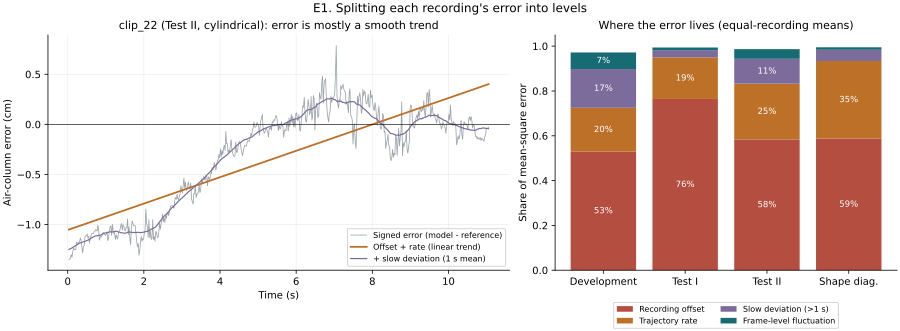
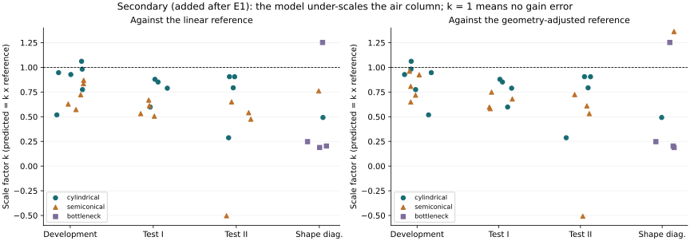
| Primary comparison at 70% retention | Test I | Test II |
|---|---|---|
| Time only minus acoustic score, total error | −0.18 cm [−0.30, −0.09] · 8/8 better | −0.53 cm [−1.04, −0.16] · 8/8 better |
| Score within time bins minus no selection, frame-level error | +0.004 cm [+0.003, +0.006] · 8/8 worse | +0.016 cm [+0.009, +0.022] · 8/8 worse |
Each comparison: exact sign-flip p = 0.0078 (2/256), Holm-adjusted p = 0.031; 2,000 container bootstrap intervals. Errors remain relative to the assumed filling reference.
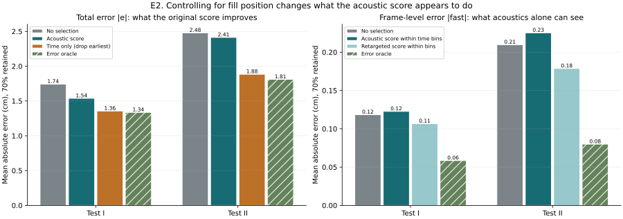
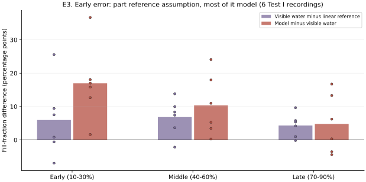
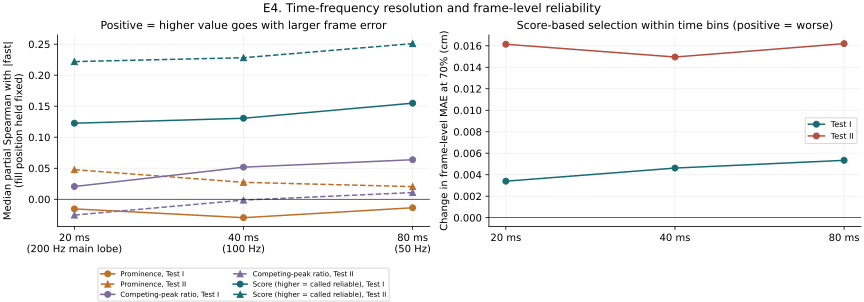
One endpoint can shift the whole trajectory
The physical conversion subtracts the final predicted wavelength from every frame. A final pitch switch can introduce a global offset. Keeping 70% of each recording cannot remove that recording-level failure.
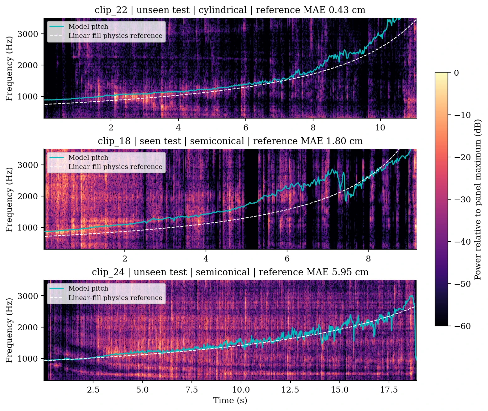
Detect final-pitch instability
The final pitch is compared with the preceding 0.2-second median. A development-derived 114.67-cent threshold flags clips 24 and 26. This offline diagnostic can miss failures with stable endpoints; its Test I ranking is worse than the constant-risk reference.
A terminal median has a tradeoff
A fixed 0.2-second endpoint median reduces Test II MAE from 2.482 to 1.583 cm, mainly through two severe failures. Test I MAE increases from 1.742 to 1.778 cm. The original default decoder remains unchanged.
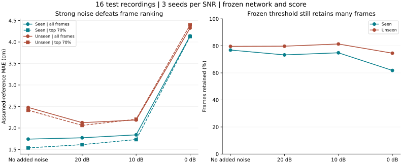
Signal-processing controls explain the tradeoffs
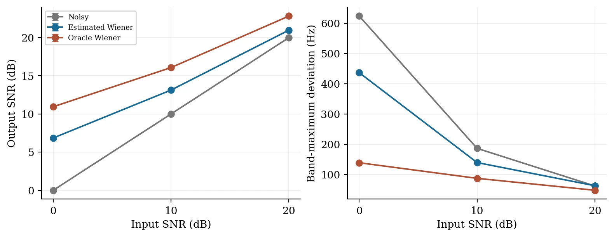

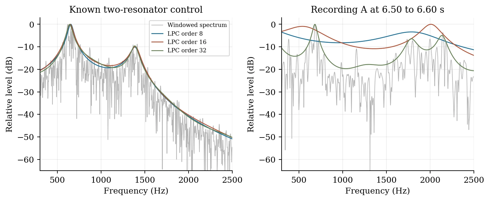

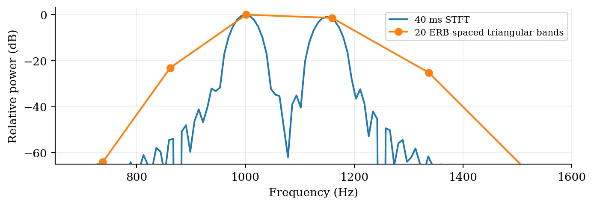
Listen to pouring and compare local outputs
Hear the source recording
The player loads the original public file from its source host. This preview precedes shared-gain processing; the matched four-way comparison is below.
Open the original source file ↗ if the player cannot load it.
The controlled comparison uses the same six-second excerpt, 10 dB added noise, the first fixed noise realization and a shared gain. Select the four generated WAV files to play them here. MATLAB is not required for this playback.
Files stay on your device. Select Original_segment.wav, Noisy.wav, Estimated_Wiener.wav and Oracle_Wiener.wav.
1 · Original segment
2 · Added noise
3 · Estimated Wiener
4 · Oracle Wiener
One informal listener reported clear noise in version 2, clear water sound in version 3, intermittent sound in version 4 and no obvious difference between versions 1 and 3. The oracle uses clean-signal information as a diagnostic benchmark.
Processed audio is not newly hosted here because dataset redistribution terms remain unconfirmed. Generate the four files and read the listening provenance ↗
Reproduce the analysis in Python and MATLAB
Source hashes, cached neural predictions and analysis code are included. The normal workflow uses the cached model outputs and requires no checkpoint download.
Verified local inputs
Download the project, install the pinned dependencies, and prepare the data:
python -m pip install -r python/requirements-analysis.txt
python python/setup_project.py --portableSource WAV hashes are exact. Portable reproduction checks table values within explicit tolerances and preserves archived summaries.
One working entry point
R = run_project(false, false);GitHub CI executed all 33 recordings and 21,494 frames, then independently compared four MATLAB result tables with Python. The updated coverage figure was also generated in MATLAB.
Commands, environment and numerical checks ↗ · Current CI status ↗
Limitations
- The level-by-level experiments are post-hoc explanations motivated by a disclosed exploratory check; the gain-factor analysis was added after the first of them.
- Absolute errors depend on the assumed filling curve and container geometry. The project has no independently calibrated physical water-level traces.
- Test I shares seven of eight score-development containers. Test II has only eight containers and differs in other conditions. The added LOCO analysis is post-review, and its folds share training data.
- Exact sign-flip tests require a sign-symmetric null; small-sample bootstrap intervals are uncertain. Global curves are descriptive and do not validate a deployment threshold.
- Of 72 planned video frames, 46 green water-surface bands were confirmed by the author and 26 were excluded. Blue rim/base bands were not separately confirmed. Perspective, refraction and visibility-dependent exclusions limit the visual proxy.
- Endpoint processing and within-recording ranking use complete recordings. Listening observations come from one informal, unblinded comparison.
Sources and original contribution
This project builds on Bagad et al., The Sound of Water: Inferring Physical Properties from Pouring Liquids. Its contribution is the acoustic reliability analysis, controlled DSP experiments, failure diagnosis and reproducible evaluation.
Upstream code · Dataset · Project code: MIT · Third-party terms and notices